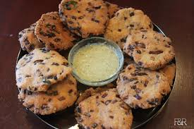

Maddur Vada

Maddur Vada is a crispy and savory snack from Karnataka, known for its unique texture and flavor. It is made with a combination of rice flour, semolina, and all-purpose flour, along with spices and onions.
Ingredients:
- 1 cup rice flour
- 1/4 cup all-purpose flour
- 1/4 cup semolina
- 1/2 cup finely chopped onions
- 2-3 tablespoons grated coconut
- 2-3 green chilies, finely chopped
- 1 teaspoon cumin seeds
- A pinch of asafoetida (hing)
- Salt to taste
- Hot oil for mixing (3-4 tablespoons)
- Water, as needed to make the dough
- Oil for frying
Instructions:
-
Prepare the dough:
- Mix rice flour, all-purpose flour, semolina, onions, grated coconut, green chilies, cumin seeds, asafoetida, and salt in a bowl.
- Pour hot oil into the mixture and mix until crumbly.
- Add water gradually and knead into a firm dough.
-
Shape the Vadas:
- Divide the dough into small portions and flatten each portion into discs.
- Ensure the discs are evenly shaped and not too thick for even frying.
-
Fry the Vadas:
- Heat oil in a frying pan.
- Fry the flattened discs in batches on medium heat until golden brown and crispy.
- Drain on paper towels to remove excess oil.
Serving:
Enjoy Maddur Vada with coconut chutney or a cup of hot tea. This snack is perfect for festive occasions or as an evening treat😊.